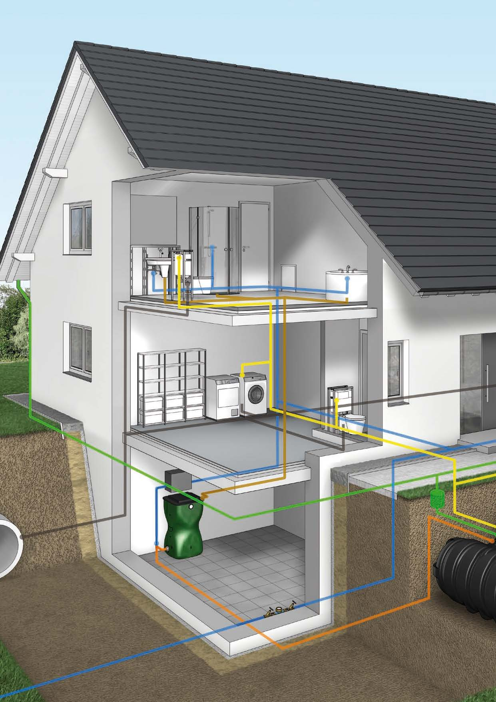

Hűtés, fűtés rendszerek
A hűtési rendszerekben a szürkevíz használata különösen előnyös olyan létesítményekben, ahol nagy mennyiségű víz szükséges a gépek és berendezések hűtéséhez. Az ipari környezetekben alkalmazott zárt körforgású rendszerek lehetővé teszik a szürkevíz többszöri újrafelhasználását, csökkentve ezzel a friss víz iránti keresletet.
Megfelelő szűréssel és tisztítással a szürkevíz biztonságosan alkalmazható, miközben csökkenti a szennyvízkezelés terheit. A fűtési rendszerekben a szürkevíz például padlófűtéshez is használható, amely hatékonyan tárolja és továbbítja a hőt.
Az ilyen rendszerek nemcsak energiahatékonyak, hanem hosszú távon költségcsökkentést is eredményeznek. Az ipari és lakóépületekben történő alkalmazásuk segíti a fenntartható víz- és energiamenedzsmentet. A szürkevíz felhasználása így hozzájárul a környezettudatos épületüzemeltetéshez és a fenntartható fejlődéshez.

Költség és idővonzat
A szürkevíz alapú hűtési és fűtési rendszerek alkalmazása jelentős kezdeti beruházást igényel, azonban hosszú távon csökkentheti az üzemeltetési költségeket és a friss vízfelhasználást. A rendszer telepítéséhez speciális szűrő- és tárolóberendezések szükségesek, amelyek biztosítják a víz megfelelő minőségét. Bár a beruházási költségek magasak lehetnek, az energiahatékonyság és a fenntartható vízgazdálkodás eredményeként idővel megtérülhetnek. A telepítési idő az adott projekt méretétől és összetettségétől függően néhány héttől akár több hónapig is tarthat. A karbantartás rendszeres ellenőrzést és szükség esetén alkatrészcserét igényel, amely biztosítja a rendszer zavartalan működését. A megfelelő üzemeltetés nemcsak a költségek optimalizálásában, hanem a környezetvédelmi szempontok érvényesítésében is kulcsszerepet játszik. Az ipari és lakóépületekben történő alkalmazása így nemcsak gazdasági, hanem fenntarthatósági előnyökkel is jár.
fűtési rendszereknél
- Kezdeti költségek: 10,000-30,000 EUR (a rendszer és padlófűtés telepítése)
- Éves üzemeltetési költségek: 500-1,500 EUR
- Karbantartási idő: évente néhány hét
- Élettartam: 15-20 év
hűtési rendszereknél
- Kezdeti költségek: 10,000-20,000 EUR (alap rendszer esetén)
- Éves üzemeltetési költségek: 1,000-3,000 EUR
- Karbantartási idő: évi néhány hét
- Élettartam: 10-15 év
Erőforrás szükségletek
A szürkevíz alapú hűtési és fűtési rendszerek kiépítése és üzemeltetése különböző erőforrásokat igényel, beleértve a technológiai, infrastrukturális és emberi erőforrásokat. A rendszer működtetéséhez speciális szűrő- és tárolóberendezések szükségesek, amelyek biztosítják a víz megfelelő minőségét és keringetését. Az energiafelhasználás a szivattyúk, szűrők és egyéb kezelőegységek működtetéséhez elengedhetetlen, azonban az újrahasznosított víz alkalmazása hosszú távon csökkentheti a teljes energiaigényt.
A telepítés és fenntartás megfelelő szakértelmet kíván, mivel a rendszerek folyamatos karbantartást és ellenőrzést igényelnek a hatékony és biztonságos működés érdekében. Az anyagszükséglet – például csővezetékek, szivattyúk és szűrőegységek – a rendszer méretétől és típusától függően változhat. Az erőforrások hatékony kezelése hozzájárul a fenntartható működéshez, miközben csökkenti a környezetterhelést és az üzemeltetési költségeket.